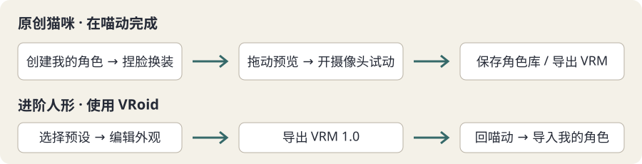

从零做出自己的角色
这是制作路线，不要求一次做得完美。先让一个角色动起来，再改细节。喵动当前导入 VRM，不会自动把照片变成角色。
先选路线：猫咪在喵动里做，人形用 VRoid

回到主界面，点“创建我的角色”。按起名、选底座、捏脸、换部件、衣服、配色、试动、保存的顺序完成。右侧可以拖动旋转；每步都能保存草稿、保存角色库或导出 VRM，关闭后下次继续。
已创建的角色可以在角色库中载入，再点“继续编辑创建的角色”。目前提供原创 Q 版猫咪；其他动物与人形底座会在后续版本接入。
进阶人形：1. 安装制作工具
打开 VRoid Studio 的中文 Steam 页面，或访问 官方网页。只从官方渠道下载安装。VRoid Studio 新版支持简体中文，在设置中选择语言；网页并没有经核实的 /zh/studio 地址，不要下载陌生“汉化安装包”。
2. 先选一个预设
- 新建角色，选接近目标的预设。
- 依次修改脸部、发型、衣服；先调大方向，再调局部。
- 随时保存可编辑工程（.vroid）。VRM 是给喵动使用的成品，不是制作工程。
3. 不满意时怎么微调
眼睛：先改大小与间距，再改瞳色；头发：先改整体发型，再改刘海与发色；衣服：先改款式，再改颜色。每次只改一组，另存“角色-版本2.vroid”，比较后保留满意版本。喵动里的取景、镜像和平滑不会改变原始模型。
4. 导出为 VRM
- 使用导出功能，优先选择 VRM 1.0。
- 选择多边形缩减、合并材质和贴图尺寸；建议最大贴图 2048，尽量不超过 10 万三角面、30 个材质。
- 保留眨眼、嘴型和眼神表情。不要为了减小文件删除头部或手脚关节。
- 填写名字、作者和许可；导出到容易找到的文件夹。
以上是喵动的初始性能提醒值，不是保证流畅的硬件承诺。超过 20 万面、60 个材质或 4096 贴图时风险较高；文件超过 200 MB 不导入。
5. 许可怎么选
“谁能使用”决定仅作者、另行授权的人还是任何人可用。“商业使用”涉及带货、广告、收礼等营利活动。“署名”决定直播简介或视频说明是否要写作者。“再分发”指把模型文件交给别人，不等于只在直播中展示。用了别人的衣服、发型、贴图，必须同时满足每份素材的条款；不清楚就向作者确认。
6. 回到喵动
- 点击“选择 VRM”或拖入文件。
- 打开“高级设置与模型诊断”，确认头部、眼睛、嘴型是否可用。
- 开启摄像头，正对镜头校准；选头像或半身取景。
- 不满意：回到 .vroid 工程修改，重新导出后导入；原始工程一直保留。
不想自己做：使用他人的角色
在 VRoid Hub 等平台必须同时确认可以下载、使用者范围以及直播/商业用途许可。只能在线浏览的角色不等于可以下载使用；不要绕过下载限制。保留模型页面链接、许可截图及取得日期，作者要求署名时照做。
还没准备好时，点“先用 pixiv 示例角色试试”即可加载随包的技术示例，或先跳过。来源和独立许可；它不是喵动原创。喵动内所有角色都能换色；原创猫咪在“创建我的角色”中还能调比例、捏脸、换耳朵、尾巴、发型和衣服，起名后导出 VRM。其他角色换发型、换衣服仍需在角色制作工具中完成。查看捏人与换色操作。